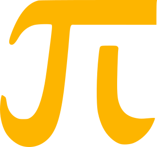

Tech-driven.
Creatively inspired.
Software Engineer · Lisbon
from decimal import Decimal, getcontext def arctan_inv(x: int, digits: int) -> Decimal: """arctan(1/x) as a power series.""" getcontext().prec = digits + 10 x = Decimal(x) term = total = 1 / x n, sign = 1, -1 while abs(term) > Decimal(10) ** -(digits + 5): term /= x * x n += 2 total += sign * term / n sign = -sign return total def pi(digits: int = 1000) -> Decimal: # Machin, 1706: π/4 = 4·arctan(1/5) − arctan(1/239) return 4 * (4 * arctan_inv(5, digits) - arctan_inv(239, digits)) if __name__ == "__main__": print(pi(50)) # 3.14159265358979323846264338327950288419716939937510

JULIANNE LOBATO